The Chimu Kingdom reached its apogee in the 15th century, not long before falling to the Incas. Its capital Chan Chan, located in the once fertile river valley of Moche or Santa Catalina, was the largest earthen architecture city in pre-Columbian America. The remains of this vast city reflect in their layout a strict political and social strategy, emphasized by their division into nine 'citadels' or 'palaces' forming independent units. The Outstanding Universal Value of Chan Chan resides in the extensive, hierarchically planned remains of this huge city, including remnants of the industrial, agricultural and water management systems that sustained it. The monumental zone of around six square kilometres in the centre of the once twenty square kilometre city, comprises nine large rectangular complexes (‘citadels’ or ‘palaces’) delineated by high thick earthen walls. Within these units, buildings including temples, dwellings, storehouses are arranged around open spaces, together with reservoirs, and funeral platforms. The earthen walls of the buildings were often decorated with friezes representing abstract motifs, and anthropomorphical and zoomorphical subjects. Around these nine complexes were thirty two semi monumental compounds and four production sectors for activities such as weaving wood and metal working. Extensive agricultural areas and a remnant irrigation system have been found further to the north, east and west of the city. The Moche and Chicama rivers once supplied an intricate irrigation system via an approximately 80 kilometre long canal, sustaining the region around Chan Chan during the height of the Chimu civilisation. Criterion (i): The planning of the largest earthen city of pre-Columbian America is an absolute masterpiece of town planning. Rigorous zoning, differentiated use of inhabited space, and hierarchical construction illustrate a political and social ideal which has rarely been expressed with such clarity.
Read more 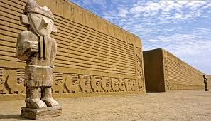 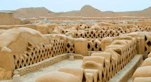 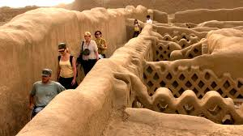
The City of Cuzco, at 3,400 m above sea level, is located in a fertile alluvial valley fed by several rivers in the heart of the Central Peruvian Andes of South America. Under the rule of Inca Pachacuteq (Tito Cusi Inca Yupanqui), in the 15th century, the city was redesigned and remodelled after a pre-Inca occupation process of over 3,000 years, and became the capital of the Tawantinsuyu Inca Empire, which covered much of the South American Andes between the 15th and 16th centuries AD. The Imperial city of the Incas was developed as a complex urban centre with distinct religious and administrative functions which were perfectly defined, distributed and organized. The religious and government buildings were accompanied by the exclusive abodes for royal families, forming an unprecedented symbolic urban compound, which shows a stone construction technology with exceptional aesthetic and structural properties, such as the Temple of the Sun or Qoricancha, the Aqllahuasi, the Sunturcancha, the Kusicancha and a series of very finely finished buildings that shape the Inca compound as an indivisible unity of Inca urbanism. The noble city was clearly isolated from the clearly delineated areas for agricultural, artisan and industrial production as well as from the surrounding neighbourhoods. The pre-Hispanic patterns and buildings that shaped the Imperial city of the Incas are visible today. With the Spanish conquest in the 16th century, the urban structure of the Inca imperial city of Cuzco was preserved and temples, monasteries and manor houses were built over the Inca city. They were mostly of baroque style with local adaptations, which created a unique and high quality mixed configuration representing the initial juxtaposition and fusion of different periods and cultures, as well as the city’s historic continuity. The city’s remarkable syncretism is evident not only in its physical structure but also in the Viceroyalty's artistic expression. It became one of the most important centres of religious art creation and production in the continent. It is also important for its population’s customs and traditions, many of which still keep their ancestral origins. From its complex past, woven with significant events and beautiful legends, the city has retained a remarkable monumental ensemble and coherence and is today an amazing amalgam of the Inca capital and the colonial city. Of the first, it preserves impressive vestiges, especially its plan: walls of meticulously cut granite or andesite, rectilinear streets running within the walls, and the ruins of the Sun Temple. Of the colonial city, there remain the freshly whitewashed squat houses, the palace and the marvellous Baroque churches which achieved the impossible fusion of the Plateresco, Mudejar or Churrigueresco styles with that of the Inca tradition.
read more 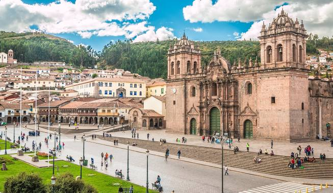 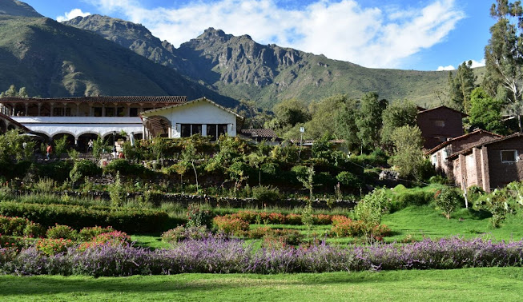 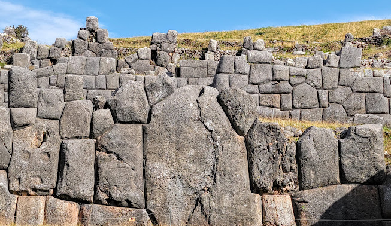 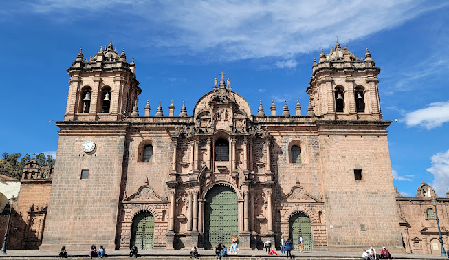Situated in the aptly named Cordillera Blanca ("White Mountains"), Huascaran National Park protects the heart of the World's highest tropical mountain range in the central Peruvian Andes. The property of 340,000 hectares covers a diverse mountain landscape from around 2,500 m.a.s.l. and culminating in 27 snow-capped peaks above 6,000 m.a.s.l. It includes the spectacular Nevado Huascaran (Mount Huascaran), Peru's highest peak at 6,768 m.a.s.l., as the property named after the 16th Century Inca leader Huascar. The snow-covered peaks, the numerous tropical glaciers and glacial lakes, the high plateaus intersected by deep ravines with torrential creeks and the variety of vegetation types form a spectacular landscape of rare beauty. Appreciating the geomorphology and striking landscape beauty it is easy to overlook that the property also boasts noteworthy ecosystem and biodiversity values. The wide range of ecosystems and vegetation types includes small pockets of montane tropical forests in some of the lower elevations and valleys. Diverse types of Paramo and Puna grasslands and scrublands are the dominant vegetation types in the property, at higher elevations transitioning into tropical tundra. Huascaran National Park is home to the emblematic Vicuna, which was close to extinction in the 1960s but has since recovered, one of the most spectacular conservation successes in South America. Other charismatic mammals include the North Andean Deer, Puma or Mountain Lion, the vulnerable Spectacled Bear and the endangered Andean Mountain Cat. The avifauna boasts more than 100 recorded species, among them the Andean Condor and the Giant Hummingbird. Around 800 plant species have been documented, the most famous being the endangered Queen of the Andes, known for its giant flower-spike. The entire region has been settled for millennia, as evidenced by the many pre-Columbian manifestations in and around the property. Early inhabitants left remnants of agricultural terraces and corrals, as well as roads, dams and water canals. Moreover, there are noteworthy cave paintings, stone tombs and countless artefacts. Criterion (vii) : Huascaran National Park covers a considerable part of the Cordillera Blanca, the highest tropical mountain range in the World. The most overwhelming visual feature is the aggregation of 27 snow-capped peaks above 6,000 m.a.s.l, in particular the Nevado Huascaran or Mount Huascaran, Peru's highest elevation at 6,768 m.a.s.l. From the property's lowest elevations at around 2500 m.a.s.l. to the summits, there is a stunning altitudinal difference of more than 4 kilometres spanning varied and rugged terrain and vegetation. The snow-covered peaks, the tropical glaciers and glacial lakes, the high plateaus intersected by torrential creeks running in deep ravines and the variety of vegetation types form a spectacular landscape of rare beauty. Among the rich flora, the famous Queen of the Andes, known for its colossal inflorescence, stands out. The diverse fauna includes charismatic mammals and birds, such as Vicuna, Spectacled Bear and Puma, as well as the Andean Condor and the Giant Hummingbird.
read more 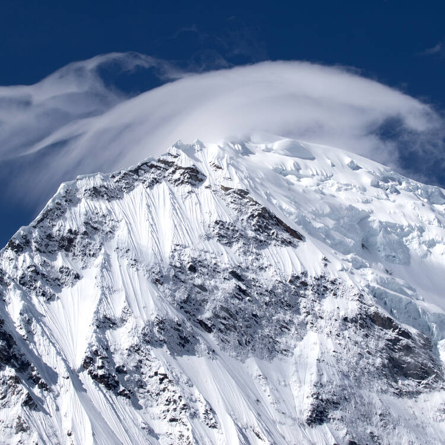 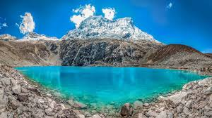 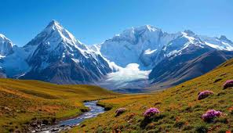 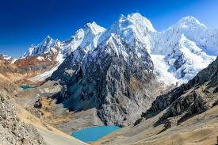